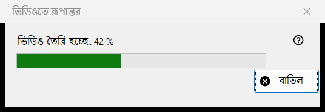
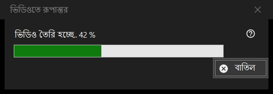

ভিডিওতে রূপান্তর
এটি কীসের জন্য
ভিডিওতে রূপান্তরের অগ্রগতির উইন্ডো: এটি অ্যানিমেটেড GIF, WebP বা APNG-কে MP4-এ রূপান্তর করে এবং তারপর মূল ফাইল মুছে দেয়। রূপান্তর নিশ্চিত করার পরে এটি খোলে, কাজ শেষ না হওয়া পর্যন্ত ভিউয়ারের ওপরে থাকে, এবং এতে একটি মাত্র বোতাম আছে, বাতিল।


এই ক্রমে
- একটি অ্যানিমেটেড ছবি দেখান।
- ছবির মেনুতে ভিডিওতে রূপান্তর করুন.. বেছে নিন, বা টুলবারের ভিডিওতে রূপান্তর করুন বোতাম চাপুন; দুটোই শুধু পর্দায় অ্যানিমেশন থাকলেই থাকে, এবং কোনো কীবোর্ড শর্টকাট নেই।
- নিশ্চিতকরণ পড়ুন এবং রূপান্তর চাপুন।
- FFmpeg ডাউনলোড করতে বললে হ্যাঁ বলুন।
- বারটি দেখুন, বা বাতিল চাপুন।
- ভিউয়ার নতুন MP4 খোলে।
উপাদানসমূহ
রূপান্তর শুরু করা
কমান্ডটি শুধু অ্যানিমেশনের জন্য দেওয়া হয়, স্থির ছবি বা ভিডিওর জন্য কখনো নয়, এবং সুরক্ষিত কন্টেইনারের জন্য, বা যেখানে ফাইলের পাশে কিছু লেখা যায় না এমন জায়গার জন্য ভিউয়ার এটি প্রত্যাখ্যান করে। কাজ শুরু হলে প্লেব্যাক থেমে যায়।
নিশ্চিতকরণ
এতে লেখা থাকে: মূল ফাইলটি নতুন MP4-এ রূপান্তর করা হবে, এবং মূল ফাইলটি রিসাইকল বিনে না গিয়ে স্থায়ীভাবে মুছে যাবে। অ্যানিমেশনে স্বচ্ছতা থাকলে এটি যোগ করে: স্বচ্ছতা কালো রঙে ভরাট করা হবে। ডিফল্ট উত্তর বাতিল। চেক বক্স প্রোগ্রাম বন্ধ না হওয়া পর্যন্ত আর জিজ্ঞাসা করবেন না কেবল ভিউয়ার বন্ধ হওয়া পর্যন্ত টেকে; এটি কখনো সংরক্ষিত হয় না।
FFmpeg
রূপান্তর FFmpeg ব্যবহার করে, যা প্রোগ্রামের অংশ নয়। এটি না থাকলে ডাউনলোডের বিষয়ে একবার জিজ্ঞাসা করা হয় (প্রশ্নে আকার দেখানো হয়; ফাইলটি প্রকল্পের সাইট থেকে আসে, স্থানীয়ভাবে সংরক্ষিত হয় এবং GPL-এর অধীনে মুক্ত সফটওয়্যার)। না বললে প্রক্রিয়া এখানেই থেমে যায় এবং কিছু তৈরি বা মোছা হয় না।
অগ্রগতির উইন্ডো
শিরোনামে ভিডিও তৈরি হচ্ছে.. শতাংশসহ লেখা থাকে, আর বারটি তার সঙ্গে চলে। অ্যানিমেশনের দৈর্ঘ্য জানা না থাকলে বারটি কোনো সংখ্যা ছাড়াই শুধু সামনে-পিছনে চলে। বাতিল, Esc কী এবং বন্ধ করার বোতাম সবগুলোর অর্থ একই: এনকোডার সত্যিই থামা পর্যন্ত উইন্ডো কিছুক্ষণ থাকে, তারপর বন্ধ হয় এবং ভিউয়ার জানায় রূপান্তর বাতিল করা হয়েছে। এ সময় ভিউয়ার ব্যবহার করা যায় না।
আপনি যা পান
একই ফোল্ডারে একই নামে একটি MP4 (নামটি নেওয়া থাকলে বন্ধনীতে একটি সংখ্যা যোগ হয়), অ্যানিমেশনের ফ্রেম রেটে, প্রতি সেকেন্ডে 1 থেকে 50 ফ্রেমের মধ্যে। এটি একটি অস্থায়ী নামে লেখা হয় এবং তৈরি হলে নাম বদলানো হয়। মূল ফাইল মোছা হয় শুধু MP4 তার চূড়ান্ত নামে তৈরি হওয়ার পরে এবং তাতে পুরো অ্যানিমেশন আছে কি না যাচাই হওয়ার পরে। স্ট্যাটাস বারে সম্পন্ন লেখা আসে এবং ভিউয়ার ভিডিওটি দেখায়।
কিছু ভুল হলে
মূল ফাইল থেকে যায় এবং স্ট্যাটাস বার কারণ বলে: ভিডিও তৈরি করা যায়নি (কারণসহ), ভিডিও তৈরি হয়েছে কিন্তু মূল ফাইল মোছা যায়নি, বা ভিডিওটি সম্পূর্ণ কি না যাচাই করা যায়নি এবং মূল ফাইল রাখা হয়েছে। ব্যর্থ চালনা মূল ফাইলকে অক্ষত রাখে, অস্থায়ী ফাইল সরিয়ে দেয় এবং বিবরণ লগে লেখে।